The New Territories Group
Ten core scholars spanning Hong Kong, London, Toronto, Sydney, and Shanghai, united by a shared commitment to ecological languaging approaches to teaching, learning and assessment.
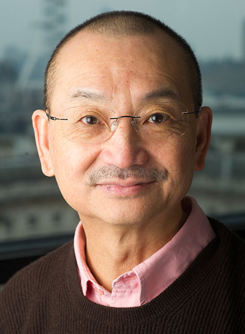
Constant Leung
World-leading expert in language education, assessment and curriculum studies. His work on teacher assessment literacy and classroom-based assessment is pivotal in the development of ELC theory and practice. Fellow of the Academy of Social Sciences in the UK.

Angel M. Y. Lin
Pioneering figure in plurilingual education and critical literacies. Former Tier 1 Canada Research Chair in Plurilingual and Intercultural Education at Simon Fraser University. Leads research on ecological languaging, translanguaging, and AI-enhanced learning design.
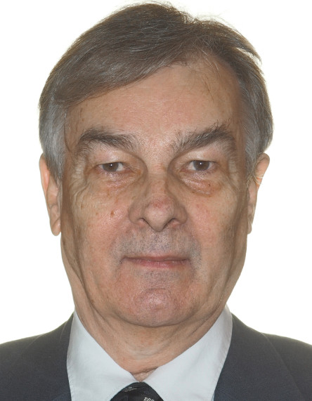
Paul J. Thibault
Leading scholar in ecological semiotics and distributed language view (DLV). His work on languaging as embodied, distributed action provides the theoretical foundation for the ELC framework.
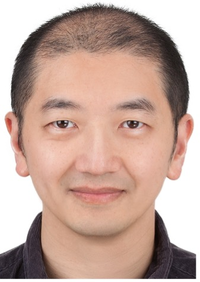
Ming Ming Chiu
Inventor of statistical discourse analysis and multilevel diffusion analysis. Applies advanced statistical and AI methods to educational research, inequalities, and learning analytics. Director of Assessment Research Centre at EdUHK.
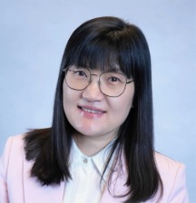
Michelle Mingyue Gu
Professor of Sociolinguistics researching language and identity, multilingualism and mobility, and digital trans-literacies. Her impactful work illuminates youth online identity and self-concept.
Eunice Eunhee Jang
Expert in language assessment and educational measurement. Her research on Bayesian assessment approaches and developmental trajectories informs the ELC assessment framework.
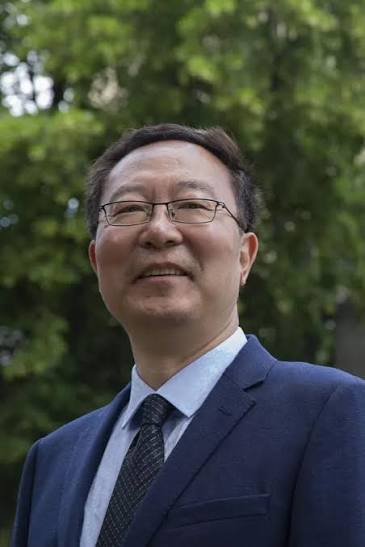
Li Wei
Distinguished scholar and world-leading researcher in applied linguistics and plurilingualism. Executive Dean of the UCL Institute of Education. Elected Fellow of the British Academy, Academia Europaea, and Academy of Social Sciences, UK.
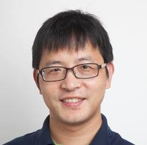
Xuesong (Andy) Gao
Top researcher in language teacher education and learner agency and identity. His work examines how teachers and learners navigate complex multilingual ecologies in classroom contexts.
Yongyan Zheng
Specialises in complex and dynamic systems theory, multilingualism, language-in-education planning. His work on the complex and distributed processes of language development and Human-AI interaction contributes to the ELC construct.
Yiqi Liu
Specialises in sociolinguistics, discourse analysis, bilingual education, CLIL and EMI. Her interdisciplinary research advances innovative pedagogy and assessment. She also pioneers the development of AI-ADS in health care professional intercultural communication training.
Collaborating researchers
Research collaborators across institutions and career stages — from senior scholars to doctoral candidates — advancing the ELC research programme.
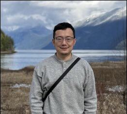
Qinghua Chen
Integrates Foucauldian frameworks with critical perspectives on language teaching. Examines generative AI's impact on education and teacher agency across Asia-Pacific contexts.
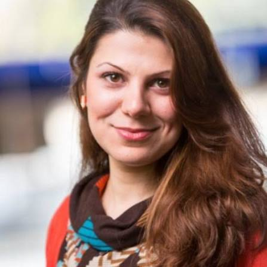
Mahtab Janfada
Advancing pluriliteracies in language and literacy education through sociocultural and critical paradigms. Expert in Bakhtinian dialogicality theory; pioneers translating the PAA Model and 4T Lenses into classroom practice.
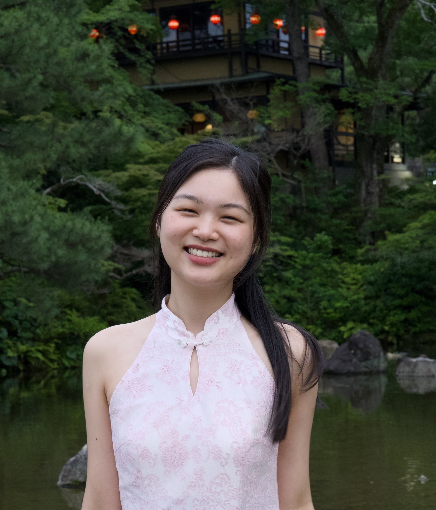
Lu Tracy Xi
Multilingual speaker of Mandarin, Cantonese, English, Japanese, and Portuguese. Her transnational identity informs interdisciplinary research in second language learning, AI-human relationality and sociolinguistics.
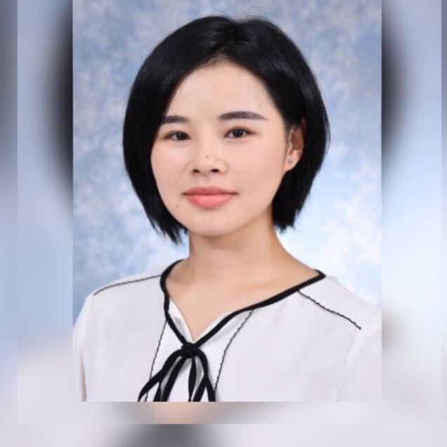
Minnie Man Zhu
Experienced Primary School Teacher and Teacher-Researcher. Pioneering the Bayesian approach to dynamic classroom assessment, conducting an auto-ethnography on Teacher Assessment Literacy Development.
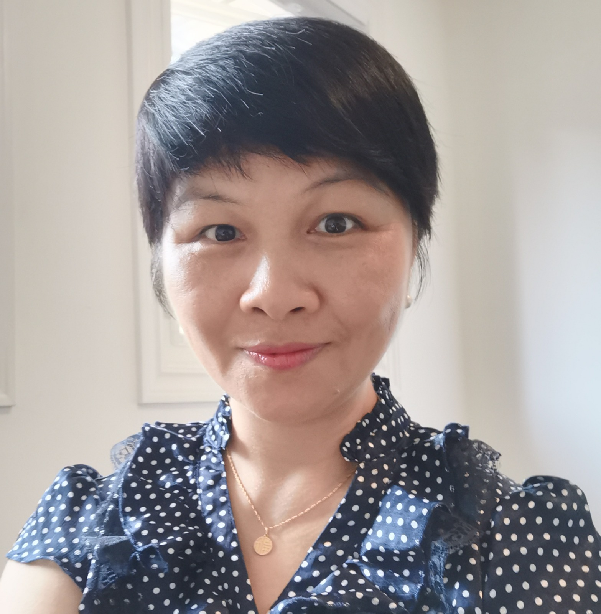
Peichang (Emily) He
Excels in translating LAC and CLIL theories into teacher-actionable classroom approaches. Pioneered the Concept and Language Mapping Approach (CLM) in CLIL and is a pivotal researcher in the ELC team.
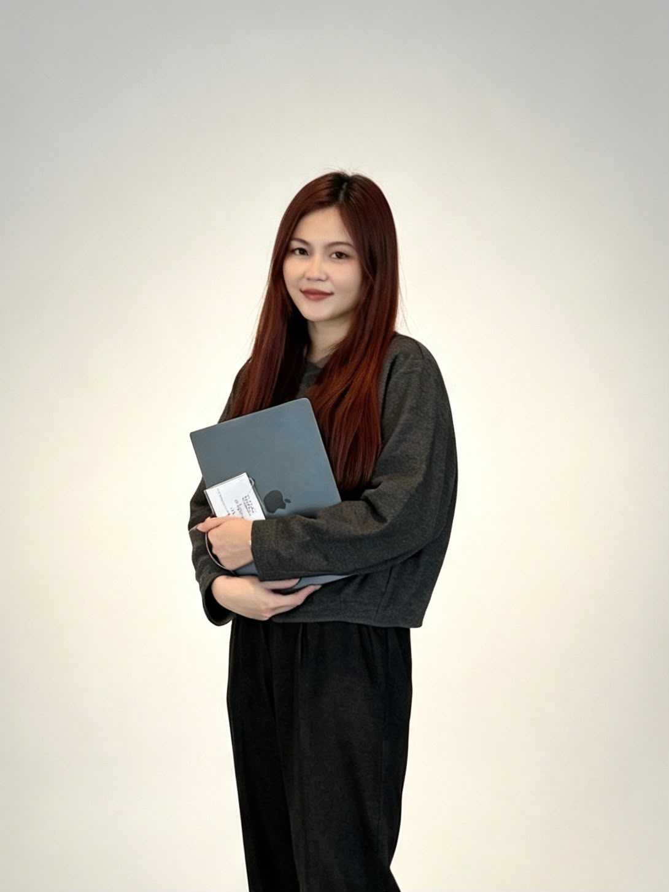
Shaoqing Guo
Pioneers Bayesian approaches to dynamic, adaptive assessment for learning. Excels in fine-grained analysis of classroom interaction, identifying the precise moments where evidence of learning emerges in real time.